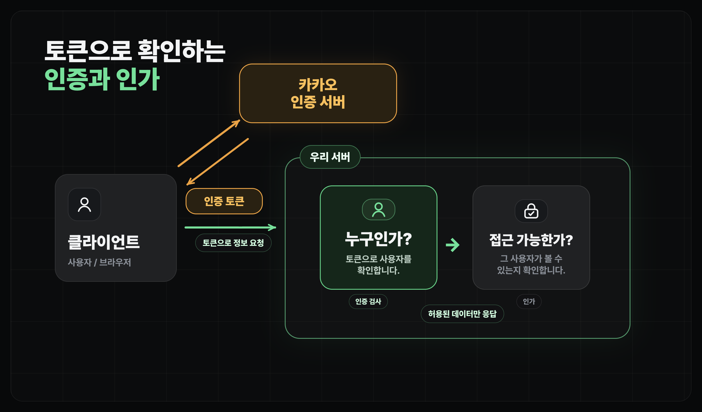

사용자 기능 개발하기
인증과 인가 이해하기
사용자 기능에서 인증과 인가가 나뉘는 기준
얻어갈 것
- 인증과 인가가 무엇인지 흐름을 파악합니다.
먼저 잡을 질문
사용자 기능을 만들 때는 질문이 둘로 나뉩니다.
| 질문 | 이름 | 예시 |
|---|---|---|
| 이 사람은 누구인가? | 인증(Authentication) | 카카오 로그인으로 사용자를 확인한다 |
| 이 사람이 이걸 해도 되는가? | 인가(Authorization) | 자기 북마크만 보고 저장하게 막는다 |
- 인증(Authentication)은 사용자를 확인하는 일입니다.
- 인가(Authorization)는 그 사용자가 할 수 있는 일을 제한하는 일입니다.
- 실제 서비스에서는 둘이 거의 항상 한 흐름으로 움직입니다. 인증으로 사용자의 신원을 확인하고, 그 신원에 연결된 권한에 따라 어떤 정보를 내려줄지 결정합니다.

저장 기능으로 보기
예를 들어 "사용자는 마음에 든 장소를 저장하고, 나중에 저장한 장소만 다시 볼 수 있습니다"라는 기능을 만든다고 해보겠습니다. 이 짧은 문장 안에 인증과 인가가 같이 들어 있습니다.
- 저장 버튼을 누른 사람이 누구인지 모르면, 먼저 로그인으로 보내야 합니다.
- 카카오 로그인을 통해서 사용자 확인을 완료하면
인증 토큰을 얻습니다. - 사용자가 저장 관련 요청을 했을 때, 서버에서는 인증 토큰을 검사하여 사용자가 누구인지 확인합니다.
- 이후 사용자가 확인되면
bookmarks테이블에서user_id가 현재 사용자와 같은 row만 만들거나 보여주게 됩니다.
이 챕터에서 이어질 것
- 다음 레슨에서는 카카오 로그인과 Supabase Auth를 연결해서 사용자를 확인하는 방법을 봅니다.
- 그다음 레슨에서는 Supabase RLS로 사용자가 자기 데이터만 읽고 쓰게 막는 방법을 봅니다.